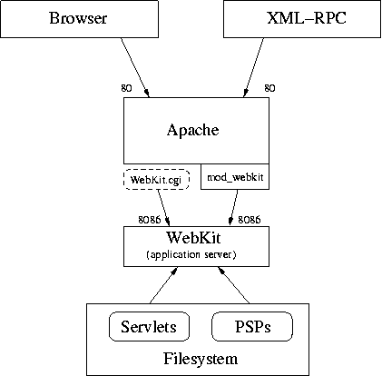

WebKit provides an application server that runs on both UNIX and Windows as a persistent application (i.e., an application that stays running over the span of multiple requests).
This install guide takes you through the installation process while showing you what options are available and how you would use them. There are notes for specific operating systems and web servers preceded with tags such as UNIX, WinNT, IIS, etc.
@@ WebKit is fairly easy to install, but there are some important things to know. You will be doing yourself a favor by reading through this guide from top to bottom (skipping sections that don't apply to you).
We recommend that you get a simple configuration working first, where you can access the examples provided with Webware. Once you've gotten to that point, the remaining customization of the environment is fairly simple.
We use the term deploy to mean installing your web application/site in a well known location for access by your users. You first develop your web application and then deploy it. You will see deployment specific notes throughout the guide since the issues for these two situations can be different. In a nutshell, you want convenience during development, and security and performance during deployment.
You can always e-mail webware-discuss@lists.sourceforge.net to give feedback, discuss features and get help using WebKit.
If you just want to get to a working configuration fast, and your setup is fairly conventional, here's a minimal set of instructions for Posix systems:
$ cd /path/to/Webware/ $ python install.py (enter password, etc) $ cd WebKit/Adapters/wkcgi $ make $ cp wkcgi /path/to/cgi-bin/wkcgi.cgi $ cd ../.. (you're now in WebKit/) $ ./AppServer
The AppServer has to be running anytime you want to access a Webware application or example. The last line of the instructions above is a simple way to start the AppServer in the console window you are working in. (There are scripts to run it automatically at boot up, see webkit init script).
You should now be able to go to your browser and open up the URL for wkcgi.cgi. (see above where you copied wkcgi. A typical URL might be http://localhost/cgi-bin/wkcgi.cgi). The wkcgi.cgi program connects to the AppServer -- Webware isn't a CGI script, but a small CGI script can be used as a gateway to the AppServer (you can't normally connect to the AppServer itself).
If you get an Internal Error, the most likely case is you can't run CGI scripts wherever you put wkcgi.cgi -- check your error logs (often in /var/log/httpd/error_log, or replace httpd with apache). If it takes a long time to get an error message, or you get a message about not being able to connect to the AppServer, then you probably forgot to start the AppServer.
(@@: someone needs to check this)
Here's what to do on Windows:
> cd \path\to\Webware > python install.py (enter password) > copy WebKit\Adapters\wkcgi\WebKit.exe \path\to\cgi-bin > cd WebKit > AppServer.bat
\path\to\cgi-bin should be wherever Apache looks for cgi-bin scripts. (@@: default location?)
This copies the adapter that that Apache can find it, and starts the AppServer. The AppServer is a program that must be running anytime you want to access your servlets or PSP files.
You should now be able to go to your browser and open up http://localhost/cgi-bin/WebKit.exe -- the WebKit.exe program connects to the AppServer -- Webware isn't a CGI script, but a small CGI script can be used as a gateway to the AppServer (you can't normally connect to the AppServer itself).
If you get an Internal Error, the most likely case is you can't run CGI scripts wherever you put WebKit.exe -- check your error logs. If it takes a long time to get an error message, or you get a message about not being able to connect to the AppServer, then you probably forgot to start the AppServer.
Webware of course requires Python. It has been tested with Python 2.0, 2.1, and 2.2. Python 1.5.2 isn't supported anymore. If you get an error message about the version, you're probably unwittingly running the wrong version of Python. Change the AppServer or AppServer.bat scripts, giving the full path to the correct Python interpreter.
Your installation of Python must be multi-threaded. It's not entirely uncommon for third party web host providers to leave this disabled in Python because they don't expect that it's needed or for compatibility with some software. If your Python installation is not multi-threaded you will have to reinstall it. If you're using a third party host provider in this situation, you may be able to install it yourself into your home directory via a telnet or ssh account. See the Python site for instructions.
To determine if threading is enabled, start the Python interpreter from the command line and enter import thread. If you don't get an exception, all is well.
While Webware includes an experimental built-in web server, for any realistic situation you will want to use Webware in concert with another web server.
Any web server that supports CGI should be possible to use with Webware. Apache is the best supported platform, both on Posix and Windows systems. There is some experimental support for Xitami. For all other web servers (IIS included) you should expect to use CGI to interface with the AppServer.
Apache is the best supported web server, both on Posix and Windows systems. The mod_webkit is the fastest way to connect to Webware, and is only supported for Apache. CGI is also available to Apache users through wkcgi. For Windows users compiled versions of mod_webkit and wkcgi (named WebKit.exe) are also available. There are also other adapter options, see Adapters.
Most of the Webware developers use Apache.
Microsoft's Internet Information Server, or IIS, requires some special configuration due to its default non-standard CGI behavior. You have to do two things:
For IIS 4.0, configure it to handle PATH_INFO and PATH_TRANSLATED according to the CGI specification, by running the following command:
> cscript adsutil.vbs SET W3SVC/1/AllowPathInfoForScriptMappings 1
This is lightly documented in http://support.microsoft.com/support/kb/articles/Q184/3/20.ASP
CGI adapter, written in C, is available in WebKit/Adapters/wkcgi/WebKit.exe. The standard Python CGI adapter also works, but you must either configure IIS to run Python CGI scripts, or you must use Gordon McMillan's Standalone utility (part of his Installer package) or some other program to create an executable from the Python.
In order to convert WebKit.cgi into WebKit.exe using the Standalone utility, you first have to rename it to WebKit.py, and add import socket to the top of the file (you could use a configuration file instead, but this is easier). After creating the .exe file, delete WebKit.pyc and rename WebKit.py to _WebKit.py. This will avoid conflicts with WebKit.exe.
There is an ISAPI module for Webware in WebKit/Adapters/wkISAPI that needs to be compiled before use. However, there have been problems with memory leaks in this adapter.
The PyWX project aims to meld Python and AOLserver and as part of that, they created an AOLserver "stay resident" WebKit adapter for tighter integration. More information can be found at http://pywx.idyll.org . If you find that this adapter does not work with the latest release of Webware, please notify the PyWX project.
The Xitami web server purports to be smaller, and potentially easier to install than some of the other web servers. It can run the CGI adapters, but for more speed the LRWP adapter uses a persistent process for greater performance.
Other servers should work using a CGI adapter.
There is a built-in web server in Webware. It's somewhat experimental, and certainly not meant for production use. It can be run in a separate process from Webware, or in the same process.
To run the server in a separate process, run the script WebKit/Adapters/HTTPAdapter.py -- it takes the options --port=N, --host=IP and --daemon. This will start a small Python-based web server, that will forward all requests to the Webware AppServer (so you must also start the AppServer!).
The run the server in the same process, edit the AppServer or AppServer.bat script, replacing ThreadedAppServer with NewThreadedAppServer. Then start the AppServer like:
# Posix: $ ./AppServer http # Windows: > AppServer.bat http
There isn't much in the way of configuration for these servers -- they're still experimental.
Unless you just downloaded Webware (and therefore WebKit), you should check to see if you have the latest version. This version you are looking at is 0.8.1. You can check for the latest version at http://webware.sf.net.
If you're feeling adventurous, you can get the latest in-development source code from the public repository. Instructions are located at the Webware CVS page. You can find more information about CVS in general at http://www.cvshome.org. The CVS version of Webware is generally fairly stable.
WebKit actively supports Posix (Linux, BSD, Mac OS X, Solaris, etc) and Windows (95/98/NT/2000), and their various flavors.
Note that you don't have to develop and deploy on the same platform. One of the WebKit developers develops everything on Windows 98 2nd edition and deploys his web sites on BSD. Some of the web server setup is different, but in most cases the application itself will require no porting (unless you specifically use non-portable Python code in your application).
What follows are some OS specific notes:
Some Windows users are surprised that URLs passed to WebKit are case sensitive. While it's true that the various Windows file systems are case insensitive, the data structures that WebKit uses internally are not.
When editing path names in configuration files, keep in mind that you are editing a Python dictionary populated with Python strings. Therefore your paths must either use double backslashes (\) (since the backslash is a special character), use forward slashes or use "r-strings". An example of a bad string is 'C:\All\Web\'. Good examples include:
It's generally recommended to simply use forward slashes (/) for all your file paths.
Webware's main directory contains an install.py script that should always be run first.
Note that the install program doesn't actually copy the Webware files to any separate directory. It copies files within the Webware directory tree, modifies permissions, generates documentation, etc.
Also, you can run the install program as many times as you like with no ill effect, so if you're not sure whether or not it has been run, feel free to do so again. If you're debugging a problem with the installation, you can run install.py -v for verbose output.
The WebKit architecture involves three main entities at the top level:
The browser will be something like Microsoft Internet Explorer or Mozilla. The web server will be something like Apache or IIS. And finally, the app server will be WebKit, i.e. a Python process running the WebKit modules and your custom servlets.

The chronological order of events goes from top to bottom and then back up to top. In other words, the browser makes a request to the web server which in turn makes a request to the app server. The response then goes from the app server to the web server to the browser.
The key to installing WebKit is to get the web server and app server talking to each other. For this purpose, you must use a WebKit adapter.
Webware runs as whatever user you run the AppServer as. So, while Apache might be running as nobody, if you start the AppServer as root then your application will be run as root. You may wish to set up another user specifically for running the AppServer. On Unix:
$ adduser --no-create-home --system webkit $ cd path/to/Webware/WebKit $ sudo -u webkit ./AppServer
Whatever user you run the AppServer as, there are some directories under Webware/WebKit/ that must be writable by that user:
The easiest way to do this is to make these directories writeable by all (on UNIX, that would be cd Webware/WebKit; chmod -R a+rwX Cache ErrorMsgs Logs Sessions).
You may wish to set it up this way at first, and review the permissions and create a new user later.
A WebKit adapter takes an HTTP request from a web server and, as quickly as possible, packs it up and ships it to the app server which subsequently sends the response back to the adapter for delivery to the web server and ultimately the web client. More concisely, an adapter is the go-between of the web server and the app server.
There are several adapters for Webware. However, it is highly recommended that you either use wkcgi or mod_webkit. Mod_webkit is the fastest adapter, but requires you to use Apache and usually to have root access to the computer. Wkcgi uses CGI, and so is easy to install. Because it's small and written in C, wkcgi is still very fast.
All the adapters:
These adapters are not really recommended:
CGI-based adapters are the easiest to set up, and outside of Apache, Xitami, and AOLServer they are pretty much the only option.
Though these are CGI-based adapters, WebKit still runs as a persistent program with the AppServer. The CGI adapter is a program executed by the web server, which then contacts the AppServer and returns the response to the web server. Then the adapter quits, to be started again for another request. This starting up and stopping is what makes CGI slow. Because the adapter is small, this should still be faster than a all-CGI application, because most of the work is done in the persistent AppServer.
wkcgi is a CGI-based adapter written in C. It's very small and is good at it's one and only job of connecting to the AppServer. While a CGI-based adapter is the only option for some configurations, wkcgi is not a bad compromise -- it's quite fast. The only other adapter that is enough faster to be interesting is mod_webkit. You should choose one of these options.
On Windows systems you should find a file WebKit/Adapters/wkcgi/wkcgi.exe. You'll need to build the executable yourself on Posix systems -- just do:
$ cd /path/to/Webware/WebKit/Adapters/wkcgi $ make
There will be a file wkcgi. You may want to rename it to wkcgi.cgi, since in some configurations files ending in .cgi will automatically be treated as CGI scripts.
To use the script, make sure you put it somewhere where CGI scripts can be executed. This may be in a cgi-bin directory, or in some configurations it can be located anywhere so long as the filename ends in .cgi and it's executable. Check your error log if you are (quickly) getting Internal Error when you try to access the script, and for Apache see the document Dynamic Content with CGI for configuration help.
If you get an Internal Error after a couple seconds, you don't have the AppServer running. Start the AppServer (cd WebKit; ./AppServer) and try again.
The AppServer may also be running on a non-standard host (i.e., not localhost) or a non-standard port (not 8086). If this is the case, you must put a file webkit.cfg in the same directory as the wkcgi executable. This file looks like:
Host = localhost Port = 8086 MaxConnectAttempts = 10 ConnectRetryDelay = 1
(@@ special Windows instructions?)
Though it's not recommended, there is an equivalent CGI script written in Python. This script is substantially slower, as it requires a Python interpreter to be started for each request. It is located in WebKit/Adapters/WebKit.cgi -- you may wish to point the first line (#!/usr/bin/env python) to the actual path of the Python interpreter (e.g., #!/usr/local/bin/python).
Otherwise, follow the instructions for wkcgi. There is no configuration, and WebKit.cgi should be able to find the host and port of the AppServer automatically.
This is a native Apache module designed solely to communicate with WebKit. It is written in C, and has been tested on Linux and Windows. It can only be used with Apache.
This adapter is the fastest of the adapters available for WebKit. It is relatively easy to install, but you probably will need administrator or root access to the machine.
The source code and a README file describing how to configure and build mod_webkit are located in the Webware/WebKit/Adapters/mod_webkit directory.
There are two versions, mod_webkit and mod_webkit2 -- mod_webkit2 is for use with Apache 2.0. The other version is for Apache 1.3. Each is in its own directory.
To install:
$ cd /path/to/Webware/WebKit/Adapters/mod_webkit # or mod_webkit2 for Apache 2.0 $ make $ make install
The most likely most like error you will get in this process is an error make: /usr/sbin/apxs: Command not found. This means the apxs utility is probably located somewhere else, or you do not have it installed. It should be in one of these locations:
- /usr/bin/apxs
- /usr/local/bin/apxs
- /usr/local/sbin/apxs
- /usr/local/Apache-.../.../apxs
If you have an Apache directory under /usr/local, you should search it for the file. Execute the command find /usr/local/Apache... -name apxs to search for it.
If you cannot find it in any of these locations there is a good chance you don't have it installed. You should install an apache-devel package.
Once you've found or attained the apxs utility, change the Makefile file in the mod_webkit directory. Where it says APXS=/usr/sbin/apxs, change it to the appropriate location.
make install will copy the compiled module to the appropriate location and add a line to your httpd.conf file to load the module (but not activate it, see Apache Configuration below).
Copy WebKit/Adapters/mod_webkit/mod_webkit.dll (or the file from mod_webkit2 if you are using Apache 2) into your module directory for Apache (usually C:\Program Files\Apache Group\Apache\modules).
Edit httpd.conf to include the line:
LoadModule webkit_module modules/mod_webkit.dll
As well adding the configuration below.
You must also add a line like this to your httpd.conf:
<Location /WK>
WKServer localhost 8086
SetHandler webkit-handler
</Location>
Then any URL that starts with /WK/ will be directed to the AppServer on 8086. You can also use:
AddHandler psp-handler .psp
To run PSP files that are found anywhere (similar to how PHP would work, for example). You still need the /WK portion to tell mod_webkit where to find the AppServer. This also works:
Action py-serverpages /WK/ AddType py-serverpages .py
Which will run Python servlets from any location.
This adapter comes with the Python-enhanced AOLserver created by the PyWX project and is described there.
The LRWP Adapter is meant to be used with the Xitami web server. It requires the LRWP Python library to be loaded. We don't know a great deal more than that.
In most cases FastCGI will not be significantly faster than wkcgi (and may be slower!), and FastCGI is considerably slower than mod_webkit. At the same time it is also much more difficult to configure. Its use is not recommended.
Your web server will have to be FastCGI enabled, which you may be able to accomplish by downloading software at http://www.FastCGI.com where you can also learn more about FastCGI.
The top of WebKit/Adapters/FCGIAdapter.py contains a doc string explaining its setup.
Note that to date, we have only gotten this to work on UNIX.
In most cases the mod_python adapter will not be significantly faster than wkcgi (and may be slower!), and the mod_python adapter is considerably slower than mod_webkit. At the same time it is also much more difficult to configure. Its use is not recommended.
The top of WebKit/Adapters/ModPythonAdapter.py contains a doc string explaining the setup.
This has been tested on both UNIX and Windows. On Windows you should use mod_python 2.7.4 or later because there is a bug in earlier versions of mod_python for Windows that can cause Apache to crash or return incorrect responses under heavy load.
More information about mod_python can be found at http://www.modpython.org.
In most cases the mod_snake adapter will not be significantly faster than wkcgi (and may be slower!), and the mod_snake adapter is considerably slower than mod_webkit. At the same time it is also much more difficult to configure. Its use is not recommended.
This adapter is similar to ModPython, but written for the mod_snake apache module. mod_snake is another method of embedding a python interpreter into apache. mod_snake may be preferable over mod_python if you need to work with Apache 2.0.
A doc string is included at the top of WebKit/Adapters/ModSnakeAdapter.py which describes the configuration steps to use this adapter.
The OneShot adapter is another CGI based adapter, but unlike wkcgi and WebKit.cgi, the AppServer launches, serves a response and shuts down for every single request via OneShot.cgi.
OneShot is very slow, and has caused numerous weird errors over time. If you use OneShot and encounter a bug, be sure to report that you're using OneShot when you submit the bug. Most of the developers don't use OneShot anymore, and it's not as well tested as other parts of the Webware code (and the constant starting and stopping of the AppServer is also not well tested).
You may want to use OneShot on a commercial host where persistent processes (like the AppServer process) are not allowed. However, be warned that OneShot is very slow.
If you use OneShot, do not launch the AppServer separately.
The ISAPI module is located in WebKit/Adapters/wkISAPI. It currently has some memory leaks and is not well tested. It is looking for a maintainer. There's no documentation for it, and you must compile it yourself.
Adapters such as WebKit.cgi and OneShot.cgi do not rely on their name. Consequently, when you deploy your web site, you can rename the adapter to something like serve.cgi. This allows you to switch adapters later without affecting the URLs and therefore the bookmarks of your users (provided you're still using some form of CGI adapter). mod_rewrite also offers several possibilities for changing names, redirecting the root of a site to a specific context, or other URL manipulations. Mod_rewrite is extremely general.
There is one gotcha in setting up the adapters that don't rely on CGI. For mod_webkit, ModPython and ModSnake, the name that you give to the adapter location in your Apache configuration file must not actually exist in your apache document root. Also, you may not have a file or directory in your document root with the same name as one of WebKit's contexts. So, you can't have a directory named Examples in your document root.
In this section, we'll briefly touch on some of the configuration options related to installing and running WebKit. A full reference to these options can be found in the User's Guide.
The settings referenced below are found in the configuration file, WebKit/Configs/Application.config.
WebKit provides a Session utility class for storing data on the server side that relates to an individual user's session with your site. The SessionStore setting determines where the data is stored and can currently be set to Dynamic or File.
Storing to the Dynamic session store is the fastest solution and is the default. This session storage method keeps the most recently used sessions in memory, and moves older sessions to disk periodocally. All sessions will be moved to disk when the server is stopped. This storage mechanism works with both the persistant, long running AppServers and OneShot. There are two settings in Application.config relating to this Session store. MaxDynamicMemorySessions specifies the maximum number of sessions that can be in memory at any one time. DynamicSessionTimeout specifies after what period of time sessions will be moved from memory to file. ( Note: this setting is unrelated to the SessionTimeout setting below. Sessions which are moved to disk by the Dynamic Session store are not deleted).
Storing to files is provided mainly in support of the OneShot adapter. It may also prove useful in the future in support of load balancing. In this scenario, each individual session is stored in its own file, loaded for every request and saved when delivering the corresponding response.
All on-disk session information is located in WebKit/Sessions.
Also, the SessionTimeout setting lets you set the number of minutes of inactivity before a user's session becomes invalid and is deleted. The default is 60. The Session Timeout value can also be changed dynamically on a per session basis.
Activity Log
Three options let you control:
- Whether or not to log activity (LogActivity, defaults to 0, i.e. off)
- The name of the file to store the log (ActivityLogFilename, defaults to Logs/Activity.csv)
- The fields to store in the log (ActivityLogColumns) </ul>
See Configuration in the User's Guide for more information.
E-mail Errors
EmailErrors, ErrorEmailServer and ErrorEmailHeaders let you configure the app server so that uncaught exceptions land in your mailbox in real time. You should definitely set these options when deploying a web site.
See Configuration in the User's Guide for more information.
WebKit divides the world into contexts, each of which is a directory with its own files and servlets. WebKit will only serve files out of its list of known contexts.
Some of the contexts you will find out of the box are Examples, Documentation and Admin. When viewing either an example or admin page, you will see a sidebar that links to all the contexts.
Another way to look at contexts is a means for "directory partitioning". If you have two distinct web applications (for example, PythonTutor and DayTrader), you will likely put each of these in their own context.
Instead of adding your own contexts you may wish to use MakeAppWorkDir, which will partition your application from the Webware installation.
To add a new context, add to the Contexts dictionary of Application.config. The key is the name of the context as it appears in the URL and the value is the path (absolute or relative to the WebKit directory). Often the name of the context and the name of the directory will be the same:
'DayTrader': '/All/Web/Apps/DayTrader',
The URL to access DayTrader would then be something like: http://localhost/WebKit.cgi/DayTrader/
The special name default is reserved to specify what context is served when none is specified (as in http://localhost/WebKit.cgi/). Upon installation, this is the Examples context, which is convenient during development since it provides links to all the other contexts.
Note that a context can contain an __init__.py which will be executed when the context is loaded at app server startup. You can put any kind of initialization code you deem appropriate there.
You can create a working directory for your applications that is separate from the Webware installation. To do this you will use the script bin/MakeAppWorkDir.py. You should run it like:
$ python Webware/bin/MakeAppWorkDir -l --cvsignore -c context DIRECTORYNAME
This will create a directory DIRECTORYNAME that will contain a directory structure for your application. The options are:
When you do this, you'll see this directory structure:
404Text.txt Cache/ ErrorMsgs/ Logs/ WebKit.cgi lib/ AppServer* Configs/ Launch.py Sessions/ context/
Here's what the files and directories are for:
WebKit uses a process called an AppServer to handle requests. The AppServer is responsible for receiving a request from the adapter, and then running it through the Application, and then sending the response back to the adapter.
The recommended method of stopping the AppServer is through the Application Control interface. This is a servlet located in the Admin context. A username and password are required -- the username is always admin, and the password is set when you run install.py. (You can change the password through the WebKit/Configs/Application.config file). This shutdown method is safer than doing a ctrl-c from a terminal, as described below.
On all OSs, stopping the app server may also be accomplished by simply going to its terminal/command window and hitting Control-C. The app server is designed to intercept this interruption and shut down as gracefully as possible. This includes saving session data to disk, if necessary.
On UNIX, a running appserver may be stopped from a terminal by typing ./AppServer stop.
On Windows Control-C normally shuts the app server down gracefully, where as Control-Break does not. Keep that in mind and use Control-C, unless the server is unresponsive to it.
On UNIX if you don't have access to the terminal window of the app server (perhaps because you used rlogin, telnet or ssh to remotely access the machine), and "AppServer stop" doesn't work, you can use ps -ax | grep AppServer to get the pid and kill <pid> to effect a Control-C.
As you develop your web application, you will change the code of your various Python classes, including your servlets. The WebKit app server will detect a change in the timestamp of a servlet's source file and automatically reload it for you.
However, reloading fails in two areas. The first is that WebKit doesn't check ancestor classes of servlets for modifications. So if you modify an abstract class (for example, SitePage, AccountPage, etc.), it won't be reloaded. The second is that WebKit can't check non-servlet classes. So if you modify a utility class (for example, ShoppingCart, Story, etc.), it won't be reloaded.
While developing this will happen quite often. There is a setting in WebKit/Configs/AppServer.config that you should turn on early in your experimentations.
The line:
'AutoReload': 0,
in AppServer.config controls a feature where the AppServer stops and restarts itself if any loaded modules have been changed.
You can also deal with reloading problems by stopping the app server (Control-C in its terminal/command window) and restarting it. And an alternative way of reloading ancestor classes is through the Application Control servlet, in the Admin context, which will provide a list of all of the currently loaded modules, and allow you to reload selected modules. Be warned, reloading modules can cause strange behavior, because instances of objects attached to the old class definitions can still exist. AutoReload is generally the best solution.
The script WebKit/webkit is a UNIX shell script launching WebKit at boot time through the standard "init" mechanisms.
To start WebKit at boot time, make the necessary variable modifications in the script, like so:
WEBKIT_DIR=/opt/Webware/WebKit PID_FILE=$WEBKIT_DIR/appserverpid.txt LOG=/var/log/webkit PYTHONPATH= PYTHONPATH_ADDONS=
Now put this script in /etc/rc.d/init.d and do this:
# cd /etc/rc.d/init.d # chmod a+rx webkit # chkconfig webkit reset
That takes care of getting it started for future boots, but this first time you need to jump start it:
# ./webkit start
You can use chkconfig to put this in at the right runlevels. By default, it is set up properly for the default Apache install, which is to say that the AppServer starts up before Apache and shuts down after Apache.
By default, the script is in runlevels 2-5 at start priority 75, stop priority 25.
Now put this script in /etc/init.d and do this:
# cd /etc/rc.d/init.d # chmod a+rx webkit # update-rc.d webkit defaults
That takes care of getting it started for future boots, but this first time you need to jump start it:
# ./webkit start
You can use update-rc.d to put this in at the right runlevels. See man update-rc.d for more information.
@@ someone check this
You should put the webkit script either in /etc/rc.d/init.d/ or /etc/init.d/ depending on what you system has. For the example we'll assume /etc/rc.d/init.d/. You should then make symbolic links, like:
# cd /etc/rc0.d # ln -s ../rc.d/init.d/webkit K75webkit (repeat for rc1.d and rc6.d) # cd /etc/rc2.d # ln -s ../rc.d/init.d/webkit S25webkit (repeat for rc3.d, rc4.d, and rc5.d)
You will notice the variables PYTHONPATH and PYTHON_PATH which are both set to blank. The first prevents inheriting PYTHON_PATH from the environment (as security paranoia). You can comment this out if you prefer to inherit the Python path. The second allows you specify additional Python path components (regardless of whether or not you inherited the path).
ThreadedAppServerService is a version of ThreadedAppServer that runs as a Windows NT Service. This means it can be started and stopped from the Control Panel or from the command line using net start and net stop, and it can be configured in the Control Panel to auto-start when the machine boots. This is the preferred way to deploy WebKit on a Windows NT/2000 platform.
ThreadedAppServerService requires the Python win32all extensions to have been installed.
To see the options for installing, removing, starting, and stopping the service, just run ThreadedAppServerService.py with no arguments. Typical usage is to install the service to run under a particular user account and startup automatically on reboot with:
> python ThreadedAppServerService.py --username mydomain\myusername \ --password mypassword --startup auto install
(@@: can you use a to continue a line in Windows?)
Then, you can start the service from the Services applet in the Control Panel, where it will be listed as "WebKit Threaded Application Server". Or, from the command line, it can be started with either of the following commands:
> net start WebKit > python ThreadedAppServerService.py start
The service can be stopped from the Control Panel or with:
> net stop WebKit > python ThreadedAppServerService.py stop
And finally, to uninstall the service, stop it and then run:
> python ThreadedAppServerService.py remove
See Stopping the App Server and Reloading Servlets above in Adapters.
The most common installation problem is a Python exception appearing in your browser that says "bad marshal data". This is always caused by pointing the web browser to the app server:
http://localhost:8086/WebKit.cgi/
But the app server hides behind a web server so the correct URL would be:
http://localhost/WebKit.cgi/
That requires that web server and app server are set up to talk to each other. And that's what the next section is all about...